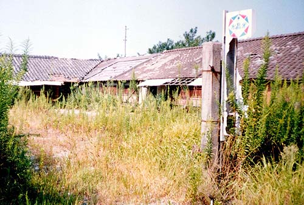

共同浴場前の公園 （写真提供者：柳田さん）
かつてプロ野球（二軍）の試合もあったというグラウンド （写真提供者：柳田さん）
グラウンド近くには福岡捕虜収容所第17分所があった。同収容所は、昭和18年8月10日開設。
使役企業は三井鉱山三池鉱業所で、終戦時の収容人員は1737人（米730、豪420、蘭332、英250、他5）。収容中の死者は138人であった
という。その内のアメリカ兵1人は営倉内で餓死、他の1人は逃亡を計り刺殺された。戦後の戦犯裁判で、2人のアメリカ兵殺害などの責任
を問われ、分所長の由利敬中尉、福原勲大尉ら4人が死刑となった。
その他、大牟田市新開町の電気化学大牟田工場にも福岡捕虜収容所第25分所があった。同所での終戦時収容人員は390人
（英388、米2）、収容中の死者4人であった。
（2004年8月15日発刊「捕虜収容所補給作戦〜Ｂ29部隊最後の作戦」より）

社宅の購買所 （写真提供者：柳田さん）
今も残る社宅出入り口の門柱（2002年7月27日撮影）
新港町社宅の入口には、今も門柱だけが残っている。その門柱の内側には古びた木造平屋建てが
一軒残っていた。以下は、今もそこに住む人からのお話である。
昭和34年から平成2年まで、夫婦二人、ここで食堂を営んでいた。お店の名は「大久保食堂」。約1000戸あった新港社宅の家々や
三川鉱関係の職場等へ出前をしていた。
新港町社宅は、三川鉱社宅と港務所社宅に分かれていて、四軒長屋で1〜6番地まであり、社宅出入口の右側に山の神神社、左側に
売店や講堂等があった。与論島出身の方もいて、その人たちの言葉は全く私たちには聞き取れなかった。
三池争議の時は「本当に恐ろしかったあ」と言い、会社まで出前に行くと、第一組合員と第二組合員が棒切れを持って殴り合いを
している現場に出くわし、「なんで同じ働く者同士があすこまでせないかんのか」と思ったという。三池争議の時、食堂は全国から
応援に駆けつけてきたオルグの人たちで賑わい、当時250円だったチャンポンがよく売れたが、ツケで食べる人が多く、その多く
がいまだに未払いになっている、と苦笑していた。また、第一組合員や第二組合員も食堂を利用してくれていたが、その人たちは衝
突を避けるため時間を分けていた。争議の警備に従事していた警察官も制服でよく食べに来てくれたが、その人たちもオルグの人た
ちとのトラブルを避けて裏口から家の中へ入り、警察官の休憩場所にもなっていた。
しかしこの家も老朽化すると同時に、家の下を坑道が走っていて少しずつ家が陥没していくのでもうすぐ引っ越す予定、であると
いう。（2003年3月31日撮影・聞き取り まえかわ）
新港社宅の「大久保食堂」。小学校（諏訪小）の同級生の家だと思います。何度か遊びに行きました。アイスキャンディーも作っ
ていたと思いますが・・。同社宅のグランド跡、社宅子供会対抗のソフトボール大会で致命的なエラーをしたことが思い浮かびます。
（2003年4月11日 ふじたさん）
新港社宅の写真、またまた涙の出る思いで見ました。私には、忘れられない「味」の思い出があります。それは、おそらく大久保
商店のことと思いますが、夏場には、アイスコーヒーを売っていたのです。コーヒーと言っても昭和30年代の初めですからおそら
く大豆なんかの代用品だったろうと思います。品質はどうであれ、とにかくうまかったのです。しかも量り売りでした。たまに一升
瓶で買ったりしていました。今でこそ生意気にブルマンとかキリマンジャロとか飲んだりしますが、当時の味にはおよびもつきません。
大久保商店は、新港社宅の門のすぐ左に有り、その奥には港務所社宅事務所がありました。そのもうひとつ奥にパン工場があった
のです。いつも甘い匂いがして、常に「ひだるか」思いをしていた私には、辛いつらい場所でした。しかし、そこは石炭とパンの切り
くずを交換してくれるありがたいところでもありました。私達、子供たちは、ボタの埋め立て地に、会社の警備の目をかいくぐって石炭
を拾って来ては、パンのミミとか、とにかく切りくずと交換してもらっていました。その味のまた何とうまかったことか50年以上
たった今でも忘れることが出来ません。
私にとって、新港町は、生まれたところではありませんが、まさに故郷と思っています。
（2003年4月12日 伊藤さん）